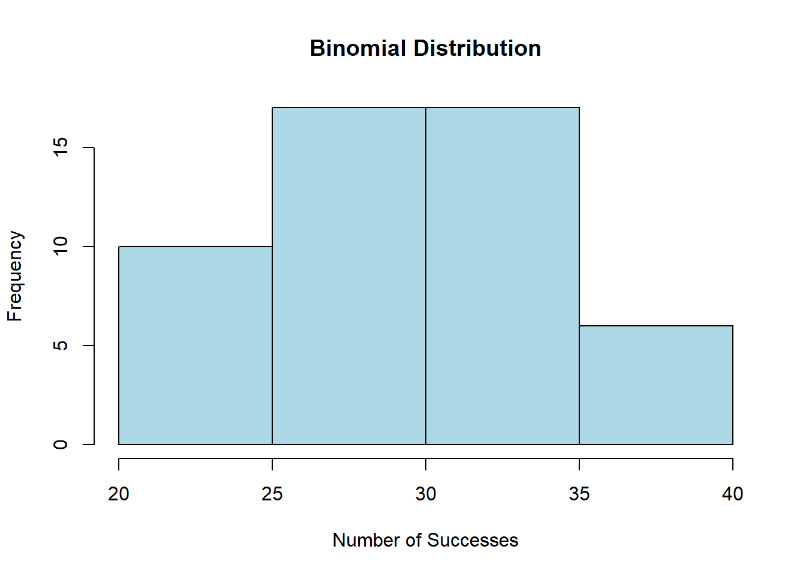
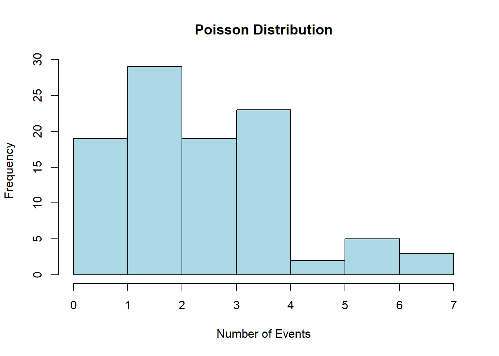

3.1 Calculate mean, standard deviation and variance with equal probability
You can use R to calculate the mean, standard deviation, and variance of a given data set using built-in functions like mean(), sd(), and var(). Here’s some sample R code to do that:
Code
# Sample data setdata_set <-c(12, 15, 18, 21, 24, 27, 30, 33, 36, 39)# Calculate the meanmean_value <-mean(data_set)cat("Mean:", mean_value, "\n")
Mean: 25.5
Code
# Calculate the standard deviationstd_deviation <-sd(data_set)cat("Standard Deviation:", std_deviation, "\n")
Standard Deviation: 9.082951
Code
# Calculate the variancevariance <-var(data_set)cat("Variance:", variance, "\n")
Variance: 82.5
Just replace the data_set vector with your actual data, and this code will compute and print the mean, standard deviation, and variance for your data set. Note the results calculated by mean(), sd() and var() assumes each data points occurs with the equal probability 1/n, where n is the number of data points.
3.2 Expectation and standard deviation with a given probability distribution
By definition,
Code
# Define the possible values and their corresponding probabilitiesvalues <-c(1, 2, 3, 4, 5)probabilities <-c(0.1, 0.2, 0.3, 0.2, 0.2)# Calculate the mean (expected value)mean_value <-sum(values * probabilities)# Print the resultcat("Mean (Expected Value) =", mean_value, "\n")
To calculate the variance of a probability distribution in R, you can use the Here’s how you can do it:
Code
# Define the values of the random variable (x_i)values <-c(1, 2, 3, 4, 5)# Define the probabilities (P(x_i))probabilities <-c(0.2, 0.3, 0.1, 0.2, 0.2)# Calculate the mean (expected value) of the random variablemean_x <-sum(values * probabilities)# Calculate the variance using the formulavariance <-sum((values - mean_x)^2* probabilities)# Print the variancecat("Variance:", variance, "\n")
Variance: 2.09
3.3 Median
Code
# Create a sample vectordata_vector <-c(12, 45, 23, 67, 8, 34, 19)# Calculate the medianmedian_value <-median(data_vector)# Print the mediancat("Median:", median_value, "\n")
Median: 23
3.4 Binomial probability distributions
You can generate a data set with a binomial distribution in R using the rbinom() function. This function simulates random numbers following a binomial distribution. Here’s an example code to generate a data set with a binomial distribution:
Code
# Set the parameters for the binomial distributionn <-100# Number of trialsp <-0.3# Probability of success in each trial# Generate a dataset with a binomial distributionbinomial_data <-rbinom(n, size = n, prob = p)# Print the generated datasetprint(binomial_data)
# Create a histogram to visualize the datahist(binomial_data, main ="Binomial Distribution", xlab ="Number of Successes", ylab ="Frequency", col ="lightblue", border ="black")

Code
# verify the mean =np, and var=npq# Sample meanmean(binomial_data)
[1] 29.62
Code
# Theoretical meann*p
[1] 30
Code
# Sample variance var(binomial_data)
[1] 24.94505
Code
# Theoretical variance n*p*(1-p)
[1] 21
You can calculate the probability of specific outcomes in a binomial distribution in R using the dbinom() function, which calculates the probability mass function (PMF) of the binomial distribution. Here’s how to use it:
Code
# Set the parameters for the binomial distributionx <-2# Number of successes (the outcome you want to calculate the probability for)n <-10# Number of trialsp <-0.3# Probability of success in each trial# Calculate the probability of getting 'x' successes in 'n' trialsprobability <-dbinom(x, size = n, prob = p)# Print the calculated probabilitycat("Probability of", x, "successes in", n, "trials:", probability, "\n")
Probability of 2 successes in 10 trials: 0.2334744
The pbinom() function in R is used to calculate cumulative probabilities for a binomial distribution. Specifically, it calculates the cumulative probability that a random variable following a binomial distribution is less than or equal to a specified value. In other words, it gives you the cumulative distribution function (CDF) for a binomial distribution.
Here’s the basic syntax of the pbinom() function:
Code
pbinom(q, size, prob, lower.tail =TRUE)
q: The value for which you want to calculate the cumulative probability.
size: The number of trials or events in the binomial distribution.
prob: The probability of success in each trial.
lower.tail: A logical parameter that determines whether you want the cumulative probability for values less than or equal to q (TRUE) or greater than q (FALSE). By default, it is set to TRUE.
The pbinom() function returns the cumulative probability for the specified value q based on the given parameters.
Here’s an example of how to use pbinom():
Code
# Calculate the cumulative probability that X is less than or equal to 3cumulative_prob <-pbinom(3, size =10, prob =0.3)# Print the cumulative probabilitycat("Cumulative Probability:", cumulative_prob, "\n")
Cumulative Probability: 0.6496107
In this example, we’re calculating the cumulative probability that a random variable following a binomial distribution with parameters size = 10 and prob = 0.3 is less than or equal to 3. The result is stored in the cumulative_prob variable and printed to the console.
You can use the pbinom() function to answer questions like “What is the probability of getting at most 3 successes in 10 trials with a success probability of 0.3?” by specifying the appropriate values for q, size, and prob.
3.5 Poisson probability distributions (Optional)
To generate a data set with a Poisson distribution in R, you can use the rpois() function. The Poisson distribution is often used to model the number of events occurring in a fixed interval of time or space when the events happen with a known constant mean rate. Here’s how you can use rpois():
Code
# Set the parameters for the Poisson distributionlambda <-3# Mean (average) rate of events# Generate a dataset with a Poisson distributionpoisson_data <-rpois(n =100, lambda = lambda)# Print the generated datasetprint(poisson_data)
# Create a histogram to visualize the datahist(poisson_data, main ="Poisson Distribution", xlab ="Number of Events", ylab ="Frequency", col ="lightblue", border ="black")

Code
# Verify the theoretical mean and variancemean(poisson_data)
[1] 2.97
Code
#Theoretical mean = lambdavar(poisson_data)
[1] 2.09
Code
#Theoretical variance = lambda
To calculate the probability of a specific value occurring in a Poisson distribution in R, you can use the dpois() function. This function calculates the probability mass function (PMF) of the Poisson distribution. Here’s how to use it:
Code
# Set the parameters for the Poisson distributionx <-2# The specific value for which you want to calculate the probabilitylambda <-3# Mean (average) rate of events# Calculate the probability of getting exactly 'x' eventsprobability <-dpois(x, lambda)# Print the calculated probabilitycat("Probability of", x, "events:", probability, "\n")
Probability of 2 events: 0.2240418
To calculate the cumulative distribution function (CDF) for a Poisson distribution in R, you can use the ppois() function. This function calculates the cumulative probability that a Poisson random variable is less than or equal to a specified value. Here’s how to use it:
Code
# Set the parameters for the Poisson distributionx <-2# The specific value for which you want to calculate the cumulative probabilitylambda <-3# Mean (average) rate of events# Calculate the cumulative probability of getting less than or equal to 'x' eventscumulative_prob <-ppois(x, lambda)# Print the calculated cumulative probabilitycat("Cumulative Probability of less than or equal to", x, "events:", cumulative_prob, "\n")
Cumulative Probability of less than or equal to 2 events: 0.4231901